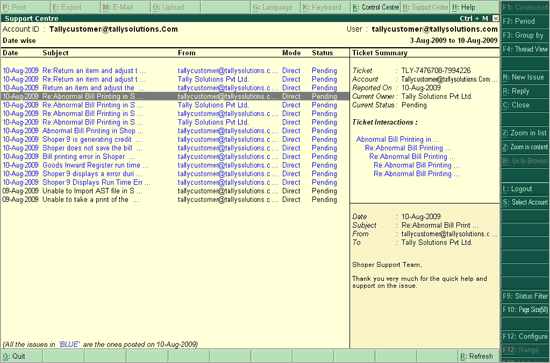
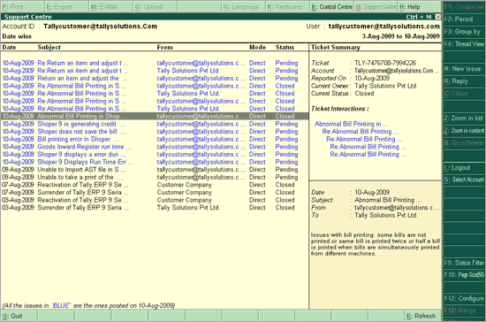

The user can Close the issues once the response to a query is received from the Customer Centre of Tally or a Service Partner, or if the issue has been resolved. Any pending issue can be closed by the user at his wish.
To close an Issue:
Select the Pending query that needs to be closed

Click on C: Close provided in the buttons toolbar, or press Alt + C from the Support Centre screen
The Status of the query will change to Closed as shown.

Note:
• The Close button in the buttons toolbar will be active only for the Pending issues.
• You need to change the Status of an interaction for a query to Close, if you are satisfied with the response received.
• When an issue with Status as Pending is Closed, the other issues which are linked to the same ticket number also get closed automatically.